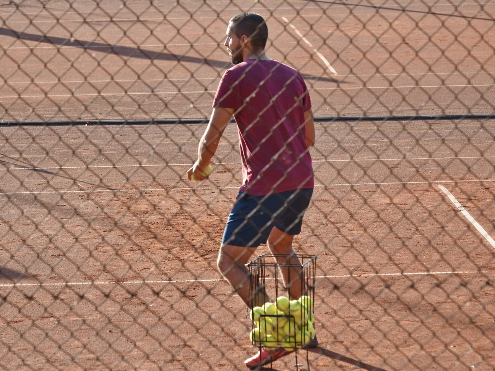

Il tennis è uno sport che vede opposti due giocatori (uno contro uno, incontro singolare) o quattro (due contro due, incontro di doppio) in un campo diviso in due metà da una rete alta circa un metro dal terreno. È considerato uno sport completo e armonico perché sono richieste al contempo ottime capacità fisiche (coordinazione, velocità e resistenza sulla distanza) e mentali (tecnica nei colpi, tattica e visione di gioco, riflessi e tenuta nervosa, intuito, pazienza e tolleranza alle frustrazioni).
I giocatori utilizzano una racchetta, come se fosse il prolungamento del braccio, al fine di colpire una palla. In passato le racchette avevano un telaio in legno, successivamente in leghe leggere, ora in grafite pura o mista a kevlar, fibra di vetro, tungsteno o basalto,[1] con una corda monofilamento congiunta in diversi punti del telaio, in modo da formare una rete.
Vedi anche: